Route 66
The mother road across America, Chicago to the Santa Monica pier.
Route 66 runs 3,940 km through the USA and finishes at Santa Monica. The first landmark is Begin Sign, Adams Street, Chicago. At 5,000 steps a day it's about 3 years of the walking you do anyway. All 98 landmarks are below, in walking order, with a photograph and the story of the place.
- 3,940km end to end
- 98landmarks
- 3 yearsat 5,000 steps a day
- Santa Monicafinishes at

The landmarks of Route 66
98 landmarks, in walking order. Each photograph is by the person credited beneath it, used as they licensed it.
-
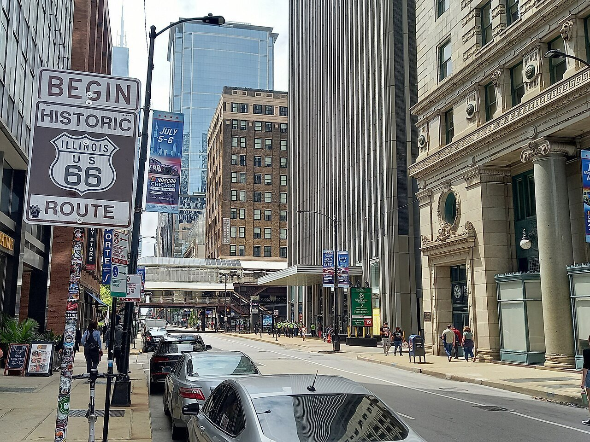
Photo: AlphaBeta135 · Wikimedia Commons, CC BY 4.0 Begin Sign, Adams Street, Chicago
The brown Begin Route 66 sign hangs over Adams Street in downtown Chicago, the Art Institute's bronze lions standing a block east. Championed by Cyrus Avery and commissioned in 1926, the highway runs 2,448 miles from this curb to the Pacific coast. Lake Michigan lies just behind, and the road unrolls west toward the prairie.
-
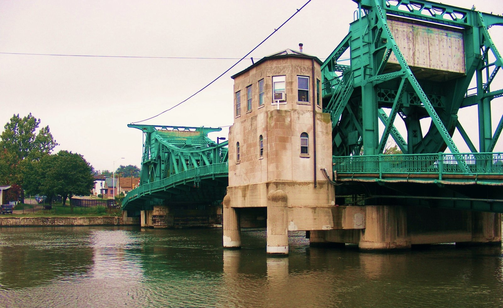
Photo: banspy · Wikimedia Commons, CC BY 2.0 Joliet IL
Joliet marks where the old road shakes off the Chicago sprawl and is often called the true start of the open highway. Downtown, the Rialto Square Theatre still glows, a 1926 movie palace whose domed lobby drew on European cathedral design. The Illinois and Michigan Canal runs through town before the route bends southwest toward the prairie.
-
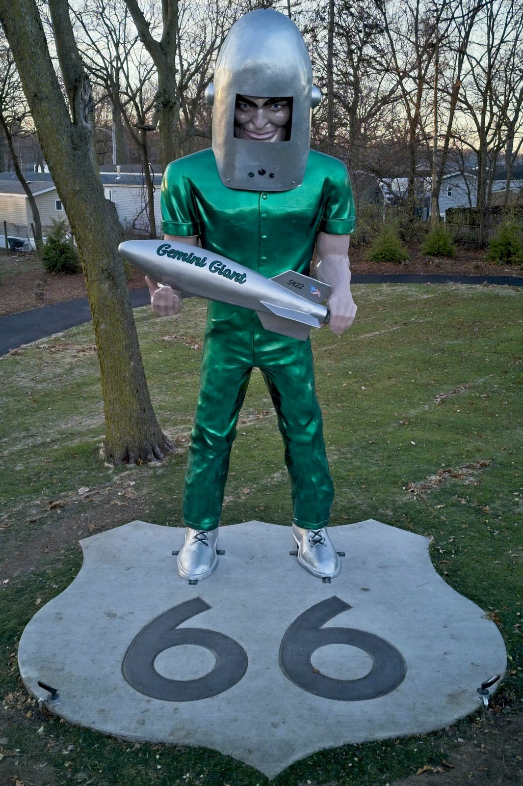
Photo: David Quigley · Wikimedia Commons, CC BY-SA 4.0 Wilmington IL (Gemini Giant)
Outside the old Launching Pad diner in Wilmington, the Gemini Giant stands thirty feet tall, a fiberglass spaceman clutching a silver rocket. These roadside giants were once called Muffler Men, sold to lure travelers off the new interstates. Snap a photo with the spaceman, then carry on down the Mother Road.
-
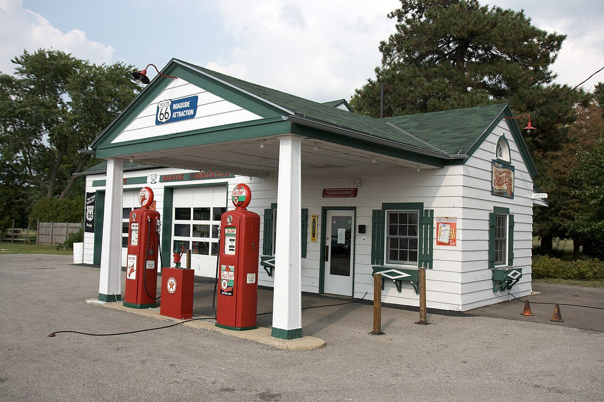
Photo: Marcin Wichary from San Francisco, U.S.A. · Wikimedia Commons, CC BY 2.0 Dwight IL (Ambler's Texaco)
Ambler's Texaco in Dwight pumped gas from 1933 until 1999, one of the longest-serving stations on the whole route. Its little canopy and gabled roof were built to look like a home, easing nervous early motorists. Rest in its shade before pressing on to Pontiac.
-
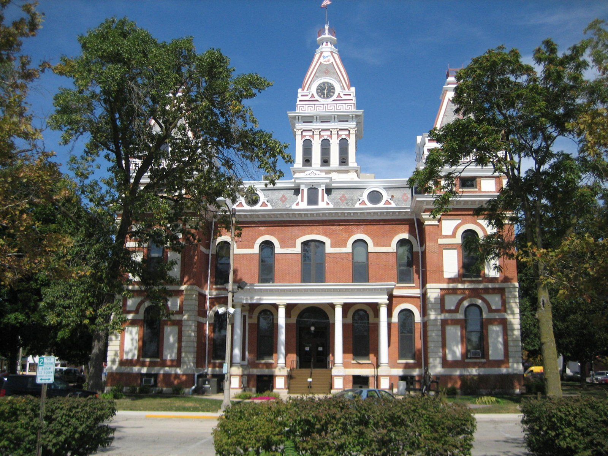
Photo: IvoShandor · Wikimedia Commons, CC BY-SA 3.0 Pontiac, Illinois
Murals cover the walls of Pontiac, a courthouse town where the Route 66 Hall of Fame keeps the road's memory alive. Bob Waldmire's hand-painted VW van rests here, a relic of the artist who mapped every diner and motel in colored ink. Sign the wall, then walk on through the prairie corn.
-
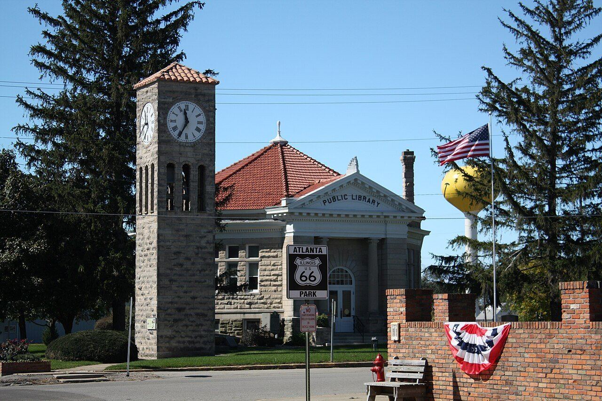
Photo: Anne Hornyak from Griffith, IN, USA · Wikimedia Commons, CC BY-SA 2.0 Atlanta IL (Bunyon's Statue)
In tiny Atlanta, a towering Paul Bunyan grips an enormous hot dog instead of an axe, rescued from a Chicago diner and re-planted on Main Street. A restored 1908 grain elevator and a working clock tower keep the little town honest. Wander its murals, then walk on toward Springfield.
-
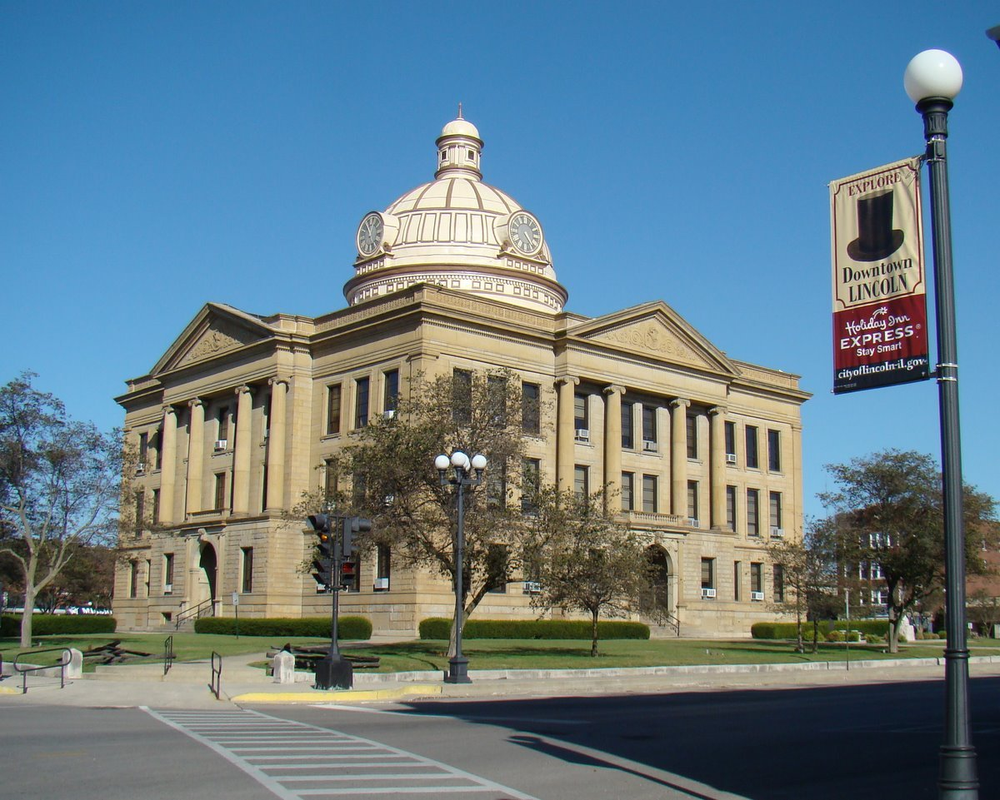
Photo: Katherine Johnson from Springfield, IL · Wikimedia Commons, CC BY 2.0 Lincoln IL
No other town was named for Abraham Lincoln before he became president, and this one he christened himself in 1853, pouring watermelon juice over the ground. The old Logan County courthouse where he practiced law still stands on the square. Buy a slice of melon in summer, then follow the rails south.
-
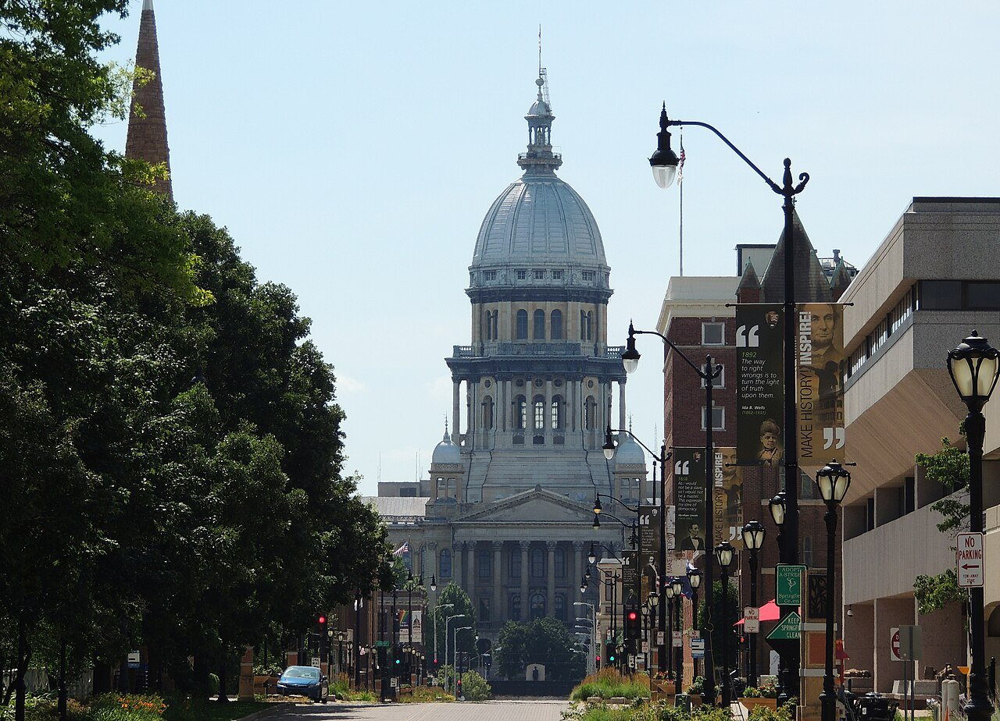
Photo: Asher Heimermann · Wikimedia Commons, CC BY 3.0 Springfield, Illinois
Springfield was Abraham Lincoln's home town, and the place where the battered hot dog on a stick was popularized as the Cozy Dog. The Old State Capitol stands in red brick on the same streets Lincoln walked before the Civil War. West of the city, the road runs on toward the great river.
-
Farmersville IL (Art's Restaurant)
The rust-streaked arrow of Art's Restaurant and Motel still points the way it did through half a century of weary drivers into Farmersville. Its old owner was famous for greeting returning travelers by name, even after years apart. Pause in the quiet of this farm village, then follow the old slab south.
-
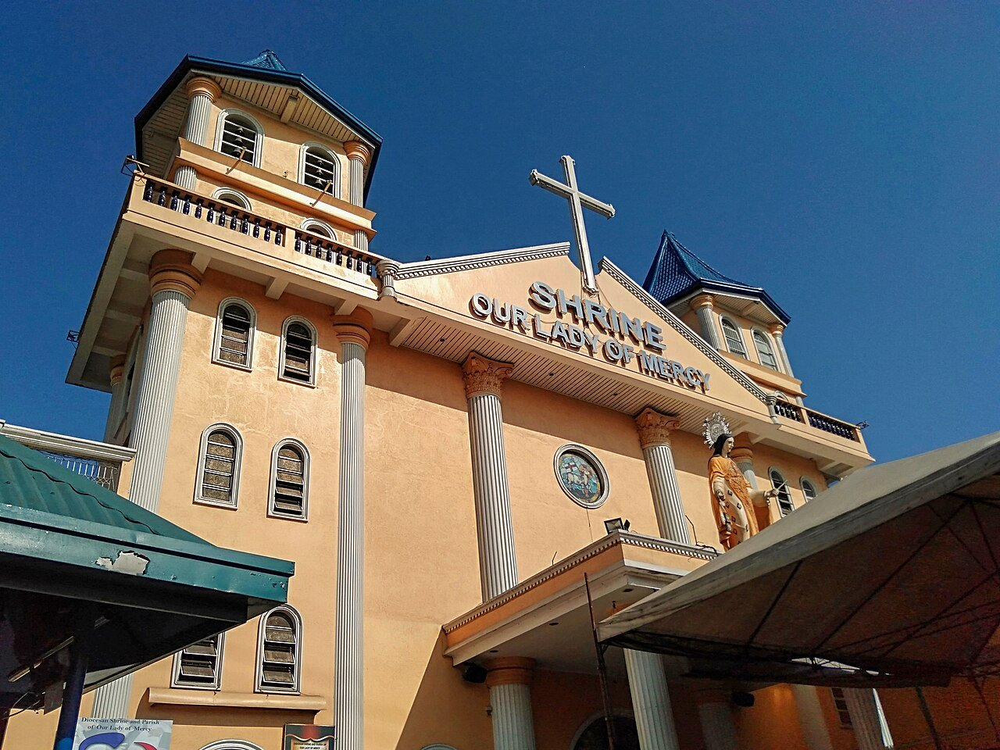
Photo: Ralff Nestor Nacor · Wikimedia Commons, CC BY-SA 4.0 Our Lady of the Highways Shrine
Since 1959, a white Carrara marble figure has watched over the roadside from a lawn near Raymond, the Shrine of Our Lady of the Highways. Local Catholic teenagers raised the money to build it, and four hand-lettered billboards count down to the statue in the old Burma-Shave style. Its inscription asks protection for those traveling the road.
-
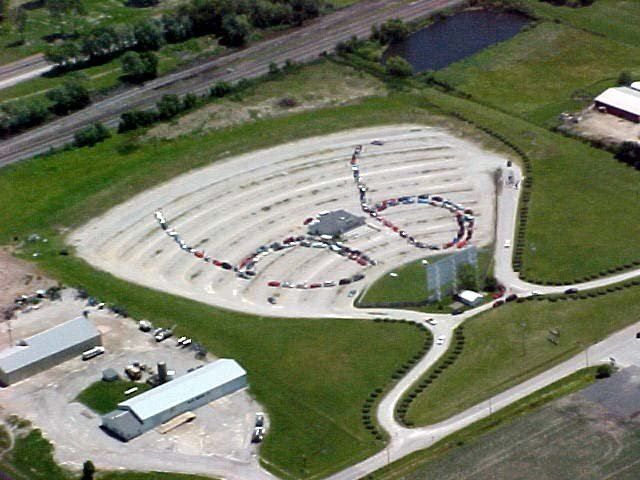
Photo: Jim Kirby · Wikimedia Commons, Attribution Litchfield IL (Sky View Drive-In)
Litchfield's Sky View Drive-In has flickered on since 1950, the last drive-in cinema still running along the Illinois stretch of the route. Nearby, the Ariston Cafe has fed travelers since the road's earliest years. Catch a sunset over the screen, then continue toward the Mississippi.
-
Mitchell IL (Luna Cafe)
A neon cherry glows in the martini-glass sign at the old Luna Cafe in Mitchell, supposedly a signal for when the upstairs ladies were available. Al Capone is said to have been a regular in its speakeasy days. Glance up at that neon, then make for the great river crossing.
-
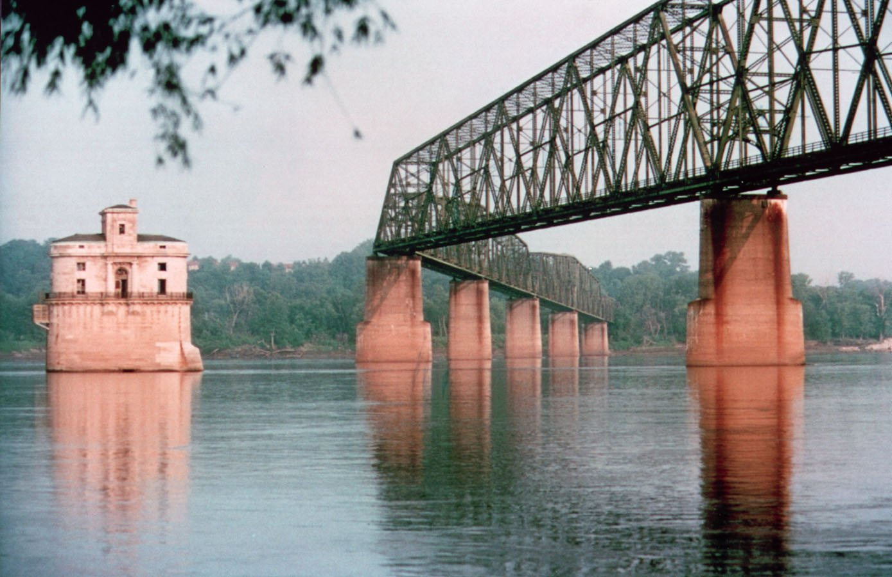
Photo: David Hinkson, http://www.trailnet.org/ · Wikimedia Commons, Public domain Chain of Rocks Bridge, St. Louis
Halfway across the Chain of Rocks Bridge, the roadway bends in a famous 22-degree kink, forced during construction by a water intake and unstable bedrock below the Mississippi. Built in 1929, it carried Route 66 into Missouri until the interstate took the traffic; only walkers and cyclists cross its deck now. The Illinois bank falls away behind, the Missouri shore ahead.
-
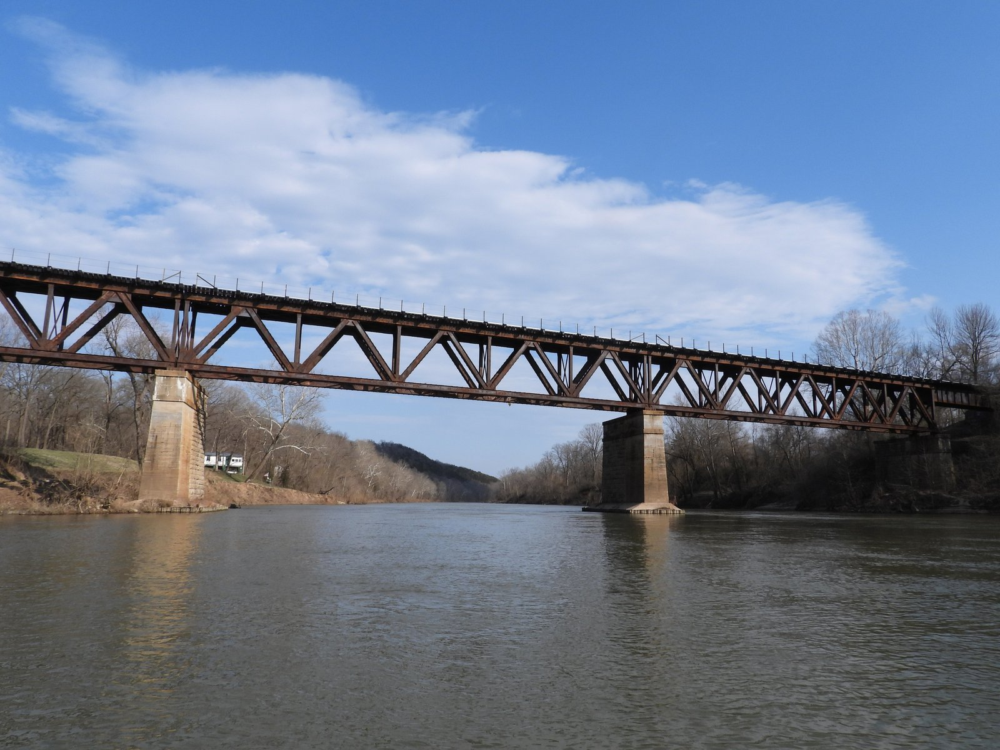
Photo: EagleScout2017 · Wikimedia Commons, CC BY-SA 4.0 Times Beach / Route 66 State Park MO
Route 66 State Park spreads green over the ghost of Times Beach, a town evacuated and bulldozed in the 1980s after waste oil laced its dirt roads with dioxin. Only a roadhouse, now the visitor center, survives of the vanished community. Walk the quiet trails where homes once stood, then head west into the Ozark foothills.
-
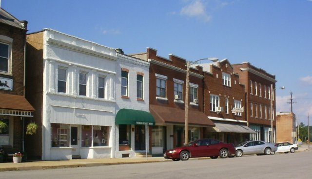
Photo: Kbh3rd at English Wikipedia · Wikimedia Commons, Public domain Pacific MO
The road into Pacific threads beneath sheer sandstone bluffs pocked with old silica mines that once supplied glassmakers across the country. Their caves still gape in the cliff faces beside the highway. Beyond the town, the route climbs into the Ozark foothills.
-
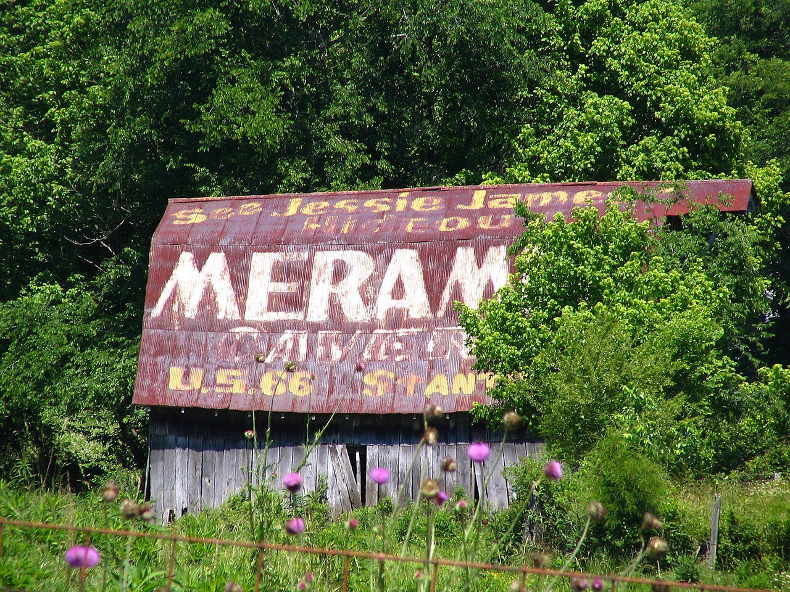
Photo: Brent Moore from Smyrna, TN, USA · Wikimedia Commons, CC BY 2.0 Stanton MO (Meramec Caverns)
A turnoff at Stanton drops toward Meramec Caverns, a vast limestone cave that Jesse James reputedly used as a hideout and that pioneered the painted barn-roof billboard. Inside, a seven-story wall of mineral curtains glows under colored light. The cave stays cool year round while the road above bakes in the sun.
-
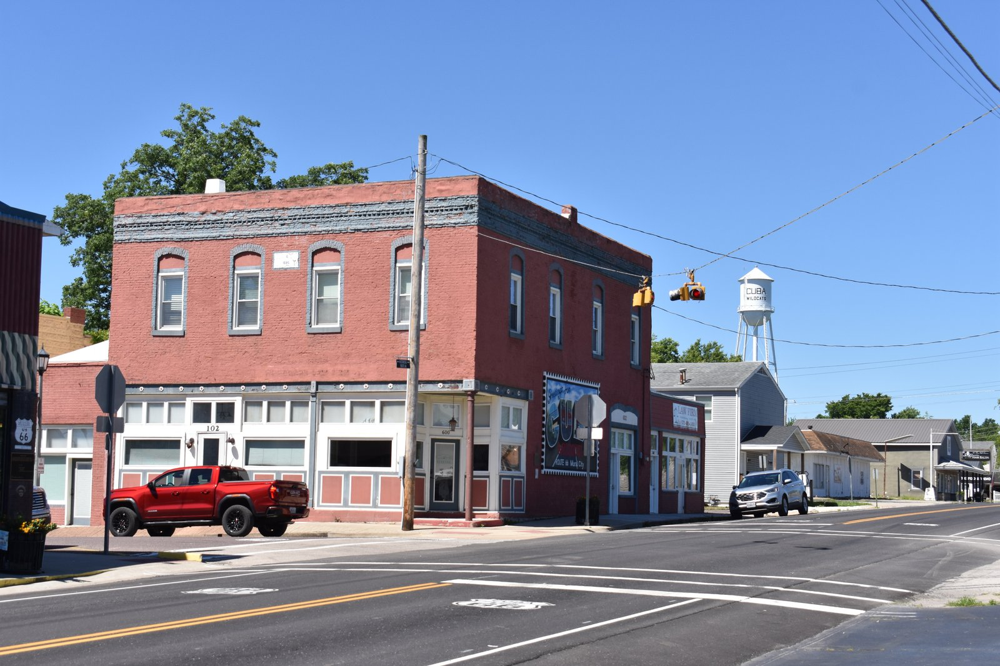
Photo: TCP04 · Wikimedia Commons, CC BY 4.0 Cuba MO (Route 66 Murals)
They call Cuba the Mural City, and more than a dozen painted scenes splash its walls with frontier history and roadside legend. The restored Wagon Wheel Motel has welcomed travelers here since 1936. Stroll the murals at an easy pace, then carry on through the Ozarks.
-
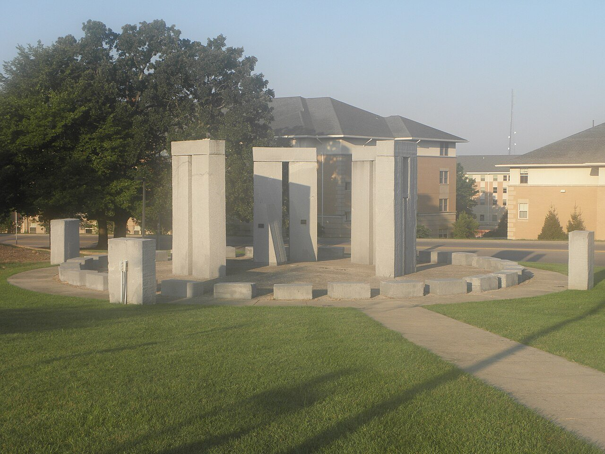
Photo: Mr Larrington · Wikimedia Commons, CC BY 4.0 Rolla MO (Stonehenge)
In the university town of Rolla, engineers carved a half-scale Stonehenge from granite using high-pressure water jets. The partial ring frames the sky just off the old road. Stand within the stones a moment, then rejoin the highway west.
-
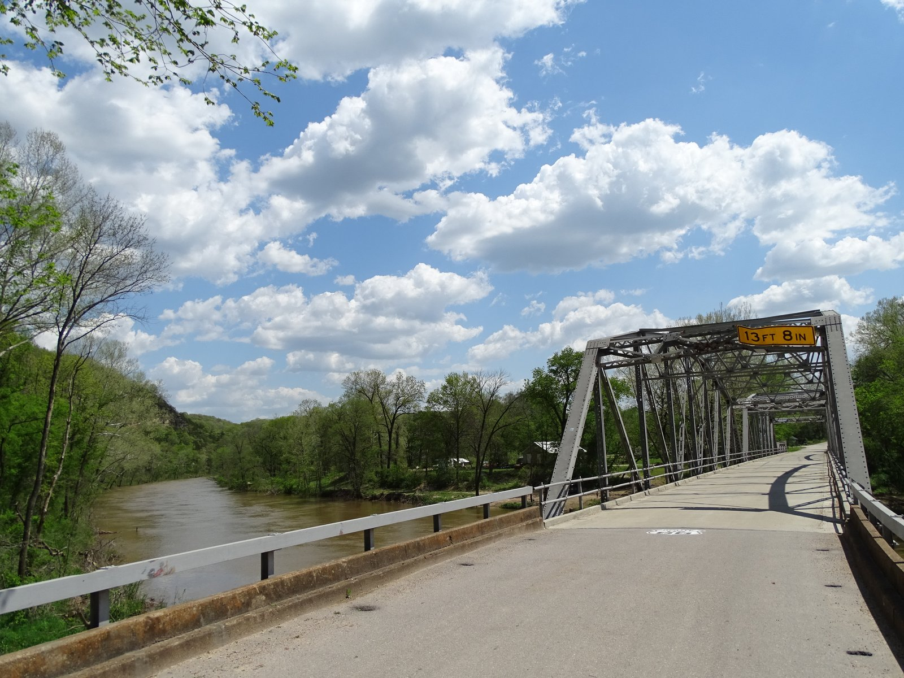
Photo: Adam Jones from Kelowna, BC, Canada · Wikimedia Commons, CC BY-SA 2.0 Devil's Elbow MO
Devil's Elbow is a sharp bend in the Big Piney River, once cursed by lumberjacks for the logjams it caused. A graceful 1923 steel truss bridge still carries the old road across the green water below high bluffs. Lean on the rail and watch the current, then climb out of the river valley.
-
Waynesville MO (Frog Rock)
Above Waynesville's Main Street, a large roadside outcrop has been painted into a grinning green frog, a local landmark overlooking the old road. The nearby Stagecoach Stop, one of the area's oldest buildings, served travelers long before the automobile arrived. From here the route continues southwest through the Ozarks toward Springfield.
-
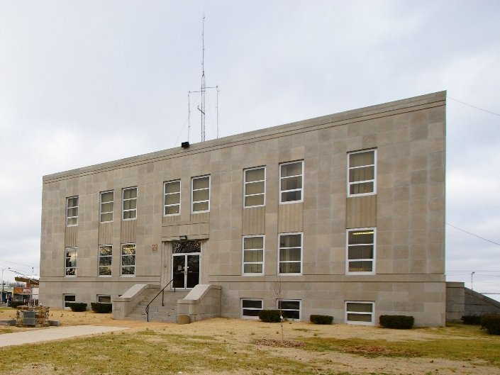
Photo: Robert Lawton · Wikimedia Commons, CC BY-SA 2.5 Marshfield MO
Astronomer Edwin Hubble was born in Marshfield, honored now with a quarter-scale replica of his namesake space telescope on the courthouse lawn. The man who proved the universe is expanding began life in this small Ozark town. Glance skyward in his memory, then walk on toward Springfield.
-
Strafford MO
Strafford's claim to fame is a downtown so neatly aligned that it was once billed as the only place where Route 66 ran down both sides of the railroad. Grain trucks still rumble through this quiet farm town on harvest mornings. The road runs on west toward Springfield.
-
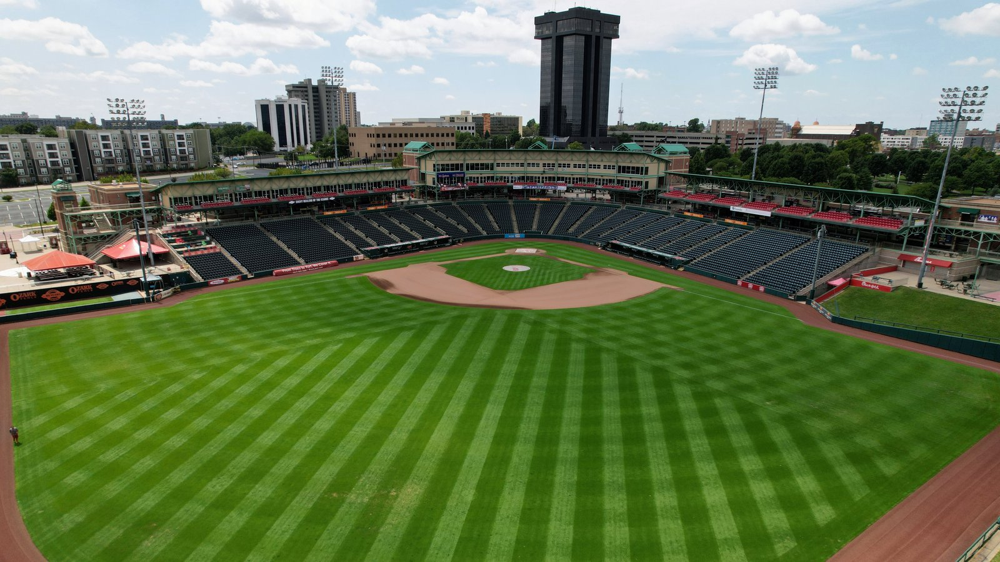
Photo: Raschmidt87 · Wikimedia Commons, CC BY-SA 4.0 Springfield, Missouri
Route 66 was named in Springfield, Missouri: from here in 1926 the road's backers sent the telegram that settled on the number 66. The Ozark hills roll green around the town, and the road grows lazier, lined with neon and old auto courts. Springfield calls itself the birthplace of the Mother Road.
-
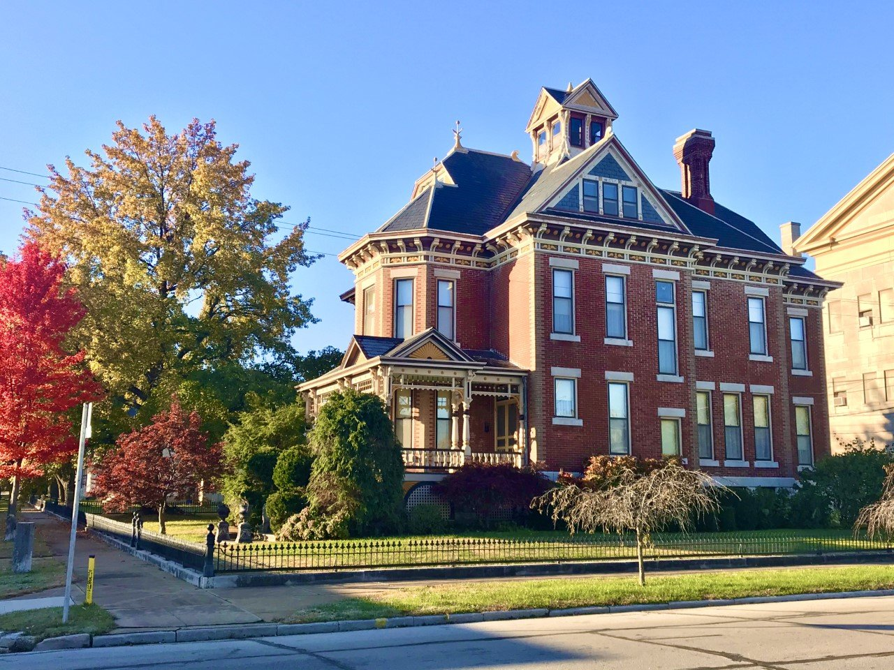
Photo: Elijah Thomas Webb Residence · Wikimedia Commons, CC BY-SA 4.0 Webb City MO (Praying Hands)
A thirty-two-foot sculpture of praying hands crowns a hilltop park above Webb City, a former lead and zinc boomtown. The mines beneath its streets once helped supply the metal for two world wars. Take in the view from the hands, then walk on to Galena.
-
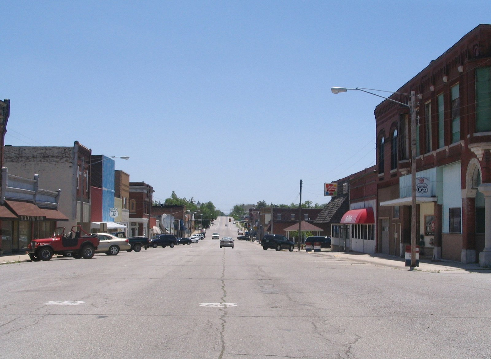
Photo: Abe Ezekowitz · Wikimedia Commons, CC BY-SA 3.0 Galena, Kansas
Kansas gives the road just thirteen miles end to end, the shortest stretch of the eight states it crosses, and the old mining town of Galena is its first stop. A rusted 1951 tow truck named Tow Tater sits outside Cars on the Route, the boom truck said to have inspired the character in the film. The short Kansas run continues on toward Riverton.
-
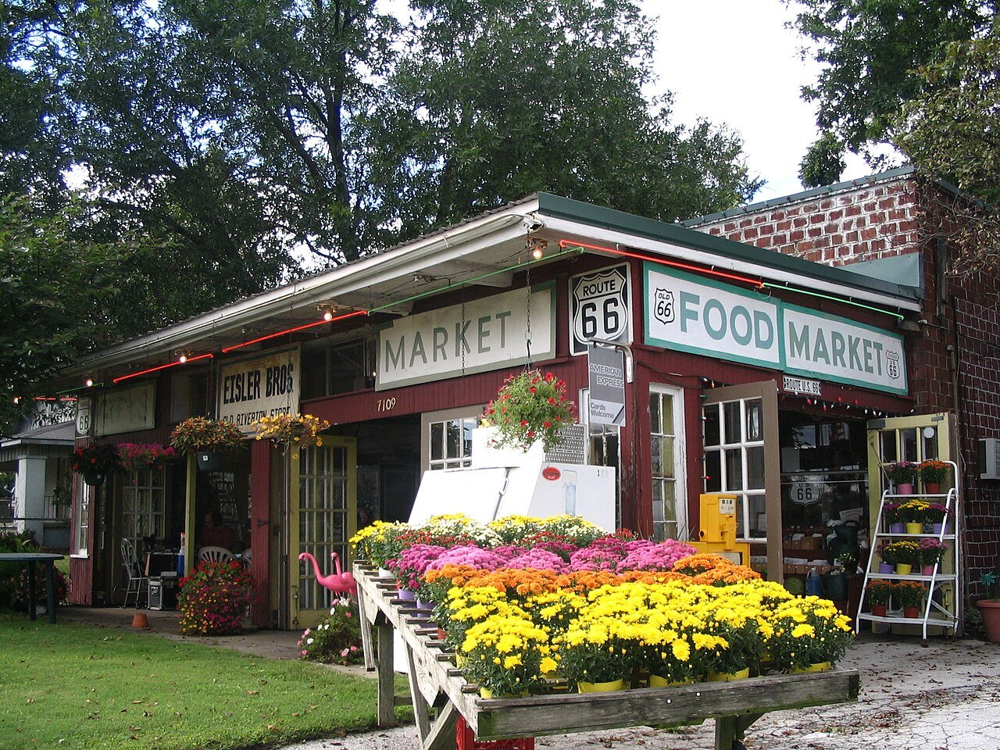
Photo: TheWhitePelican · Wikimedia Commons, CC BY-SA 3.0 Riverton KS (Eisler Brothers Store)
The Eisler Brothers' Old Riverton Store has sold groceries and route nostalgia since 1925, its wooden floors worn smooth by a century of boots. The Spring River runs cool and clear nearby. Pick up a soda and a tale, then continue across the short Kansas stretch.
-
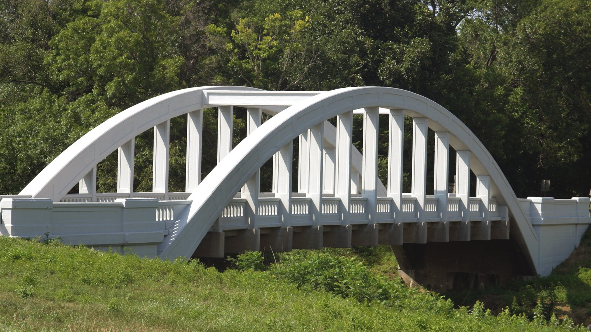
Photo: Michael Overton · Wikimedia Commons, CC BY-SA 2.5 Brush Creek Bridge KS
The Brush Creek Bridge is the last of the elegant Marsh arch rainbow bridges still carrying Route 66 traffic, its single concrete arch curving like a thrown ribbon. Hundreds once spanned American creeks; this is the survivor. Walk its gentle hump, then leave Kansas for Oklahoma.
-
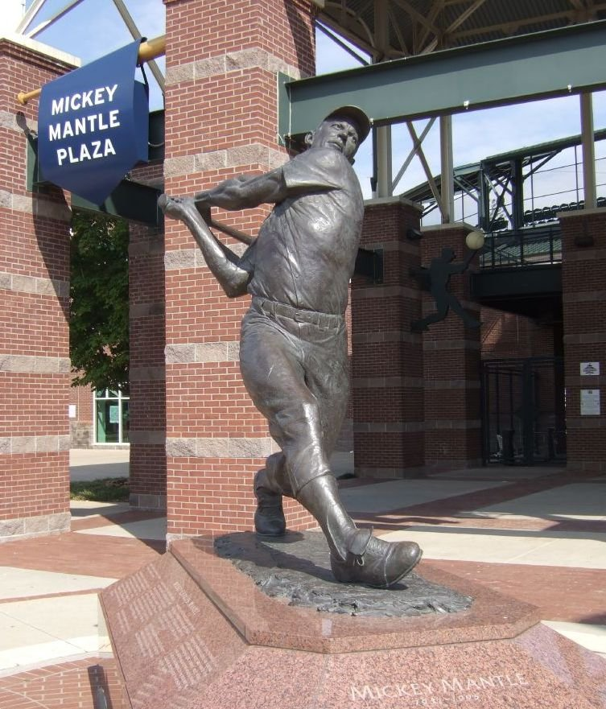
Photo: Brokentaco · Wikimedia Commons, CC BY 1.0 Commerce OK (Mickey Mantle)
Baseball great Mickey Mantle grew up in Commerce, learning to switch-hit against the side of a tin shed his father pitched balls at. His childhood house still stands on the street that now bears his name. Round the bases of his memory, then carry on south.
-
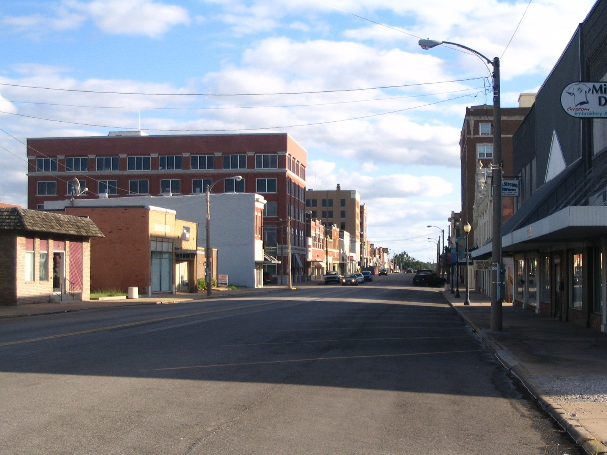
Photo: TheWhitePelican · Wikimedia Commons, CC BY-SA 3.0 Miami OK (Coleman Theatre)
Miami, pronounced my-AM-uh, keeps the lavish 1929 Coleman Theatre, rising in Spanish Revival style with gilded plasterwork and a mighty Wurlitzer organ inside. A mining magnate built it at the height of the lead boom. Peer into its ornate lobby, then continue along the old road.
-
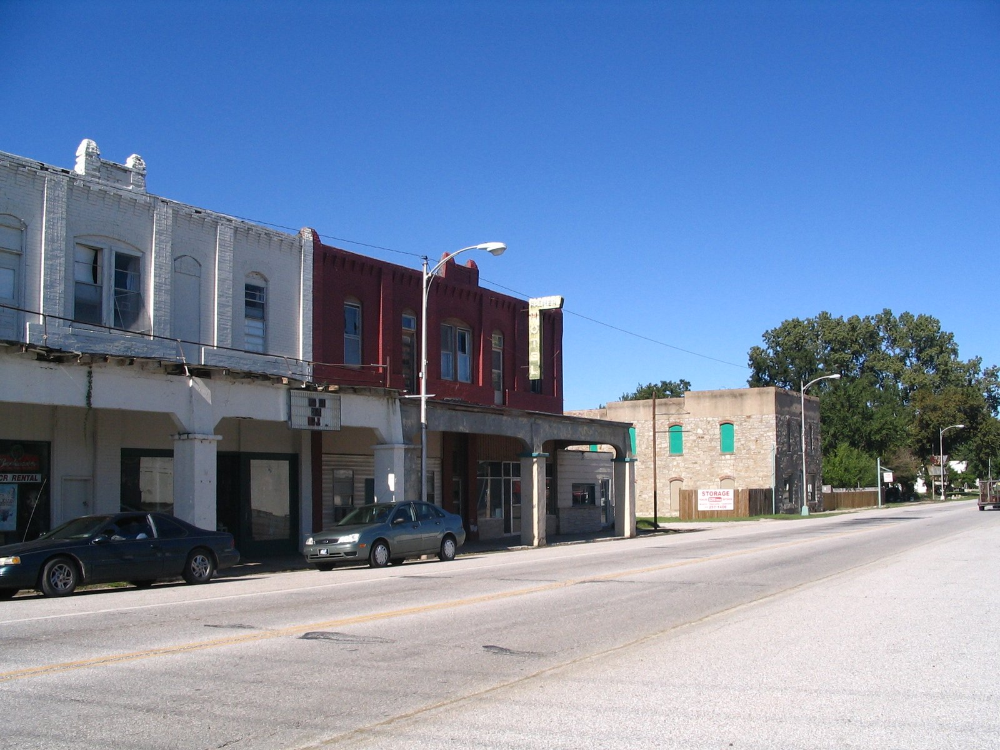
Photo: TheWhitePelican · Wikimedia Commons, CC BY 3.0 Afton OK (Afton Station)
A restored Packard showroom and station keep the road's motoring spirit alive on Afton's Main Street. Once a bustling railroad stop, its brick storefronts now drowse in the prairie sun. Wander its quiet blocks, then press on toward Tulsa.
-
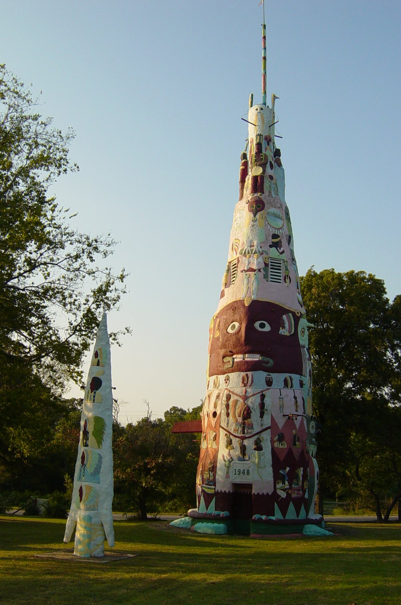
Photo: Photo by and ©2004 Dustin M. Ramsey (Kralizec!) · Wikimedia Commons, CC BY-SA 2.5 Foyil OK (Totem Pole Park)
At Foyil's Totem Pole Park, Ed Galloway hand-built what is billed as the world's tallest concrete totem pole, ninety feet of painted figures rising from the back of a turtle. He worked on it alone for eleven years using rock, sand, and scrap. The folk-art tower still stands beside the old road west.
-
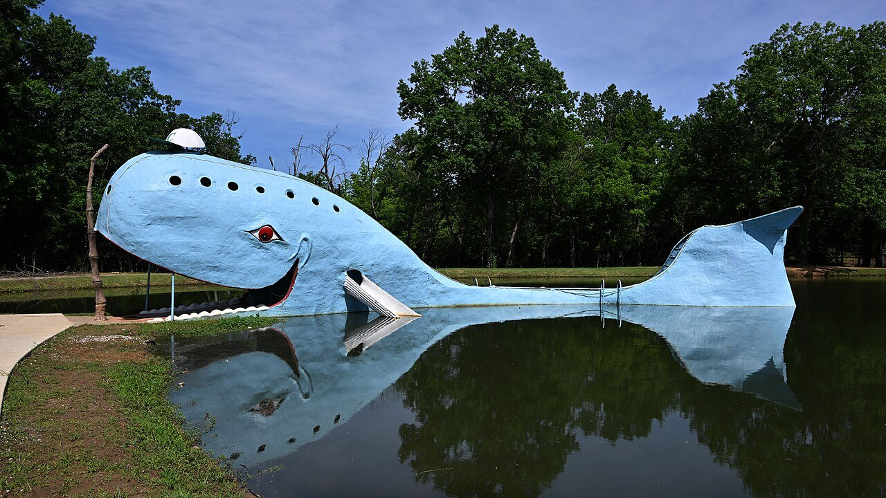
Photo: G. Edward Johnson · Wikimedia Commons, CC BY 4.0 Catoosa OK (Blue Whale)
The Blue Whale of Catoosa is a grinning eighty-foot concrete leviathan, built by a man as an anniversary gift to his wife, who collected whale figurines. Children once dove from its tail into the swimming hole around it. Sit a while in its smiling shade, then continue into Tulsa.
-
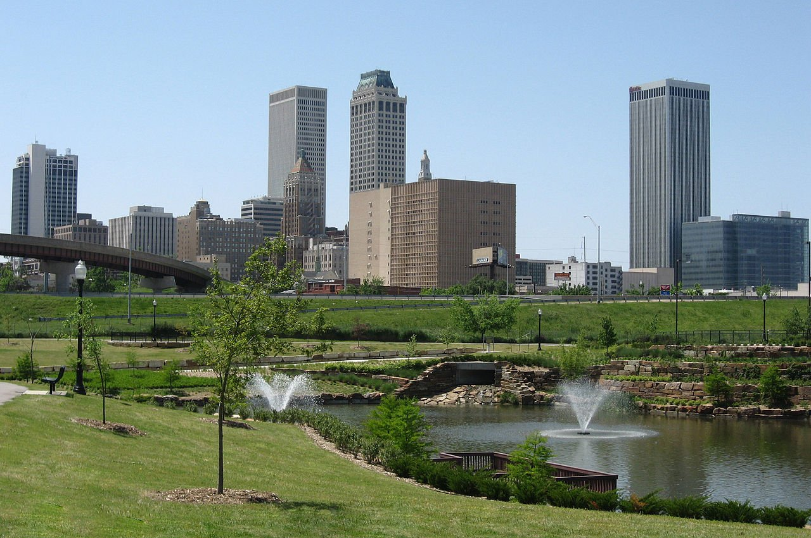
Photo: Caleb Long · Wikimedia Commons, CC BY-SA 2.5 Tulsa, Oklahoma
Cyrus Avery, the Father of Route 66, made his home in Tulsa and helped bring the highway into being. Art Deco towers from the old oil capital's boom years rise over downtown. Oklahoma is said to hold more drivable original Route 66 miles than any other state, and they run on west from here.
-
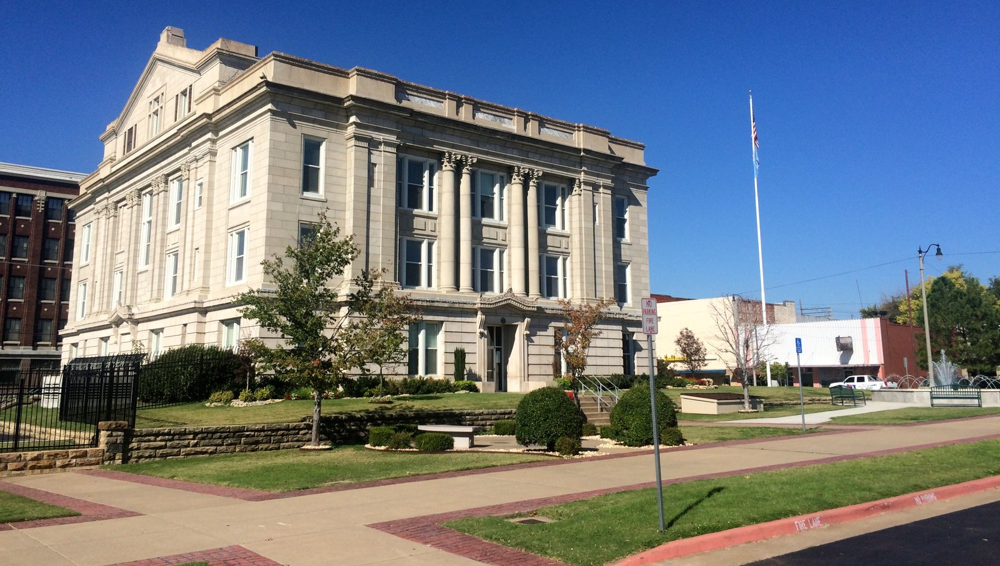
Photo: Melodibit · Wikimedia Commons, CC BY-SA 3.0 Sapulpa OK
In Sapulpa the old road crosses Rock Creek on a 1920s brick-paved truss bridge, one of the last stretches of original red-brick Route 66 you can still walk. The town's Heart of Route 66 auto museum guards a giant gas pump. Feel the brick underfoot, then carry on toward Oklahoma City.
-
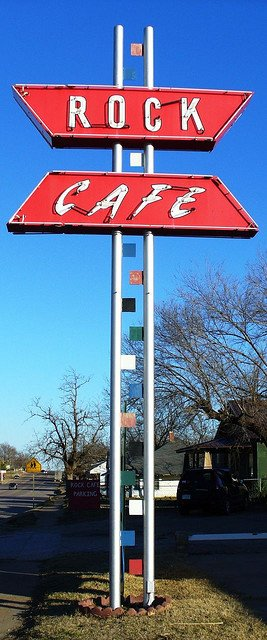
Photo: Kevin from Oklahoma, USA · Wikimedia Commons, CC BY 2.0 Stroud OK (Rock Cafe)
Stroud's Rock Cafe was built in 1939 from local sandstone dug up during the road's construction, and survived a 2008 fire that gutted everything but its stone walls. Its griddle inspired a character in a famous animated road movie. Order something off the grill, then continue west.
-
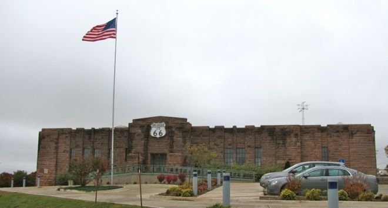
Photo: Skyring · Wikimedia Commons, CC BY-SA 3.0 Chandler OK (Route 66 Interpretive Center)
A 1936 armory of native sandstone in Chandler now houses a Route 66 interpretive museum, where visitors watch road films from hammocks and vintage car seats. The town survived a deadly 1897 tornado to become a tidy county seat. From its cool halls the road runs on toward the state capital.
-
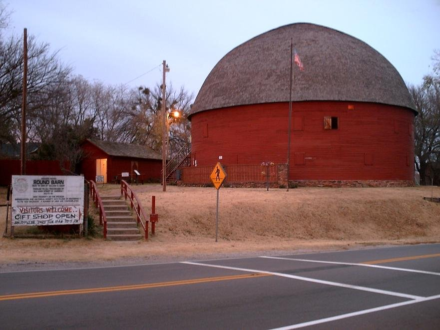
Photo: DBinfo at en.wikipedia · Wikimedia Commons, Public domain Arcadia OK (Round Barn & POPS)
Two landmarks mark Arcadia: a perfectly round red barn raised in 1898, and the soaring glass tower of POPS, hung with hundreds of glowing soda bottles. The barn was built circular on a folk belief that storms could not corner it. Pick a bottle from the wall of a thousand sodas, then continue into Oklahoma City.
-
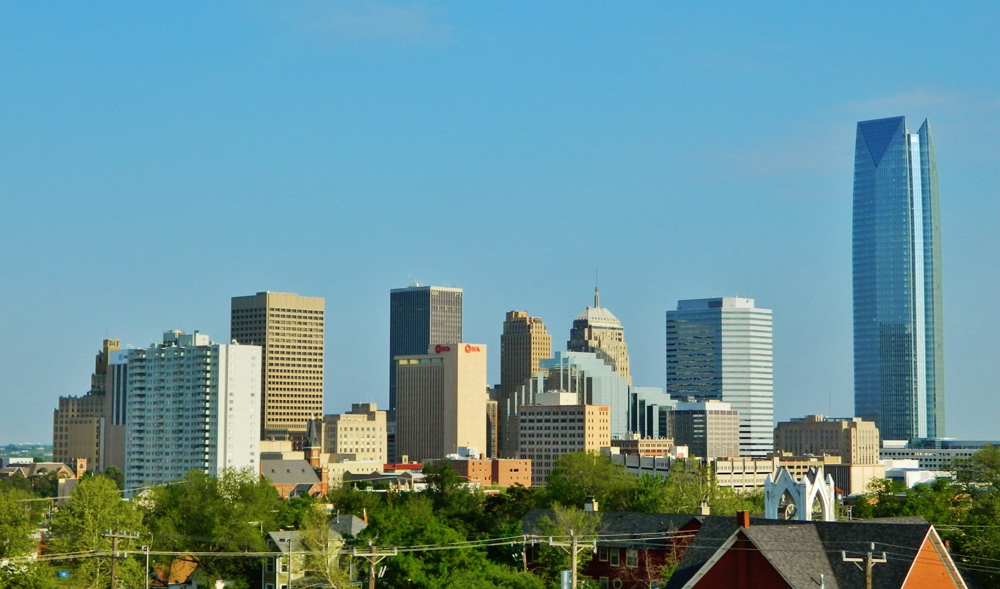
Photo: Urbanative · Wikimedia Commons, CC BY-SA 3.0 Oklahoma City, Oklahoma
The tiny triangular Milk Bottle Grocery, crowned with a giant milk bottle, sits along the road through Oklahoma City, not far from a state Capitol that once pumped oil from wells on its own lawn. The city was a staging ground for the Dust Bowl exodus Steinbeck wrote into The Grapes of Wrath. West of here the land flattens and dries.
-
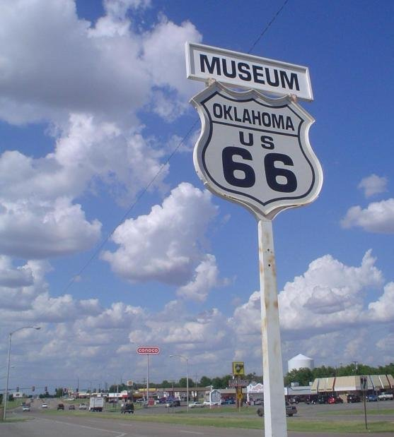
Photo: Calan at English Wikipedia · Wikimedia Commons, Public domain Clinton OK (Route 66 Museum)
Clinton holds the state's premier Route 66 museum, walking you decade by decade through the road's life, from Dust Bowl exodus to neon heyday. An Elvis-slept-here motel stands nearby. Travel the road in miniature, then return to the real one west.
-
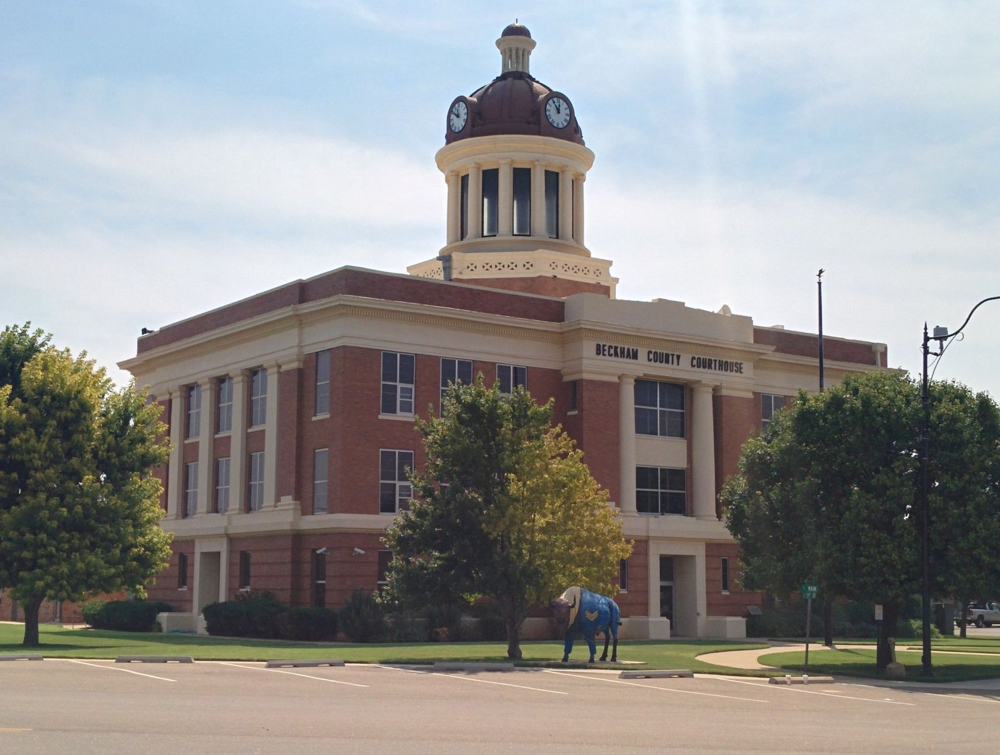
Photo: Crimsonedge34 · Wikimedia Commons, CC BY-SA 3.0 Elk City OK
A giant rotating Route 66 shield turns over Elk City, where a sprawling heritage complex preserves a whole transported pioneer town. Cattle drives once ended their long Texas trails near here. Wander the old buildings, then push on toward the Texas line.
-
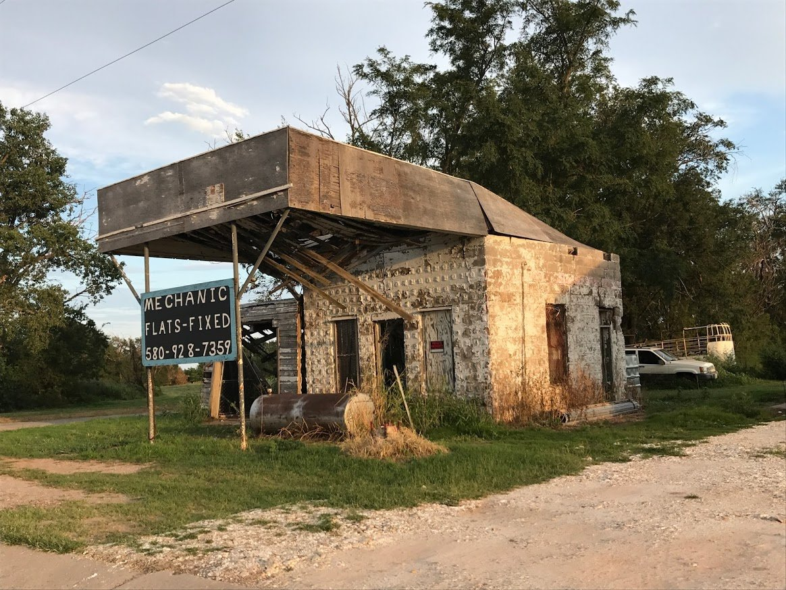
Photo: Sxl0190 · Wikimedia Commons, CC BY-SA 4.0 Texola OK
Texola is a near-ghost town straddling the state line, where a hand-painted wall reads there is no other place like this place anywhere near this place. Its tiny territorial jail of poured concrete still stands empty. Read the faded sign, then step across into Texas.
-
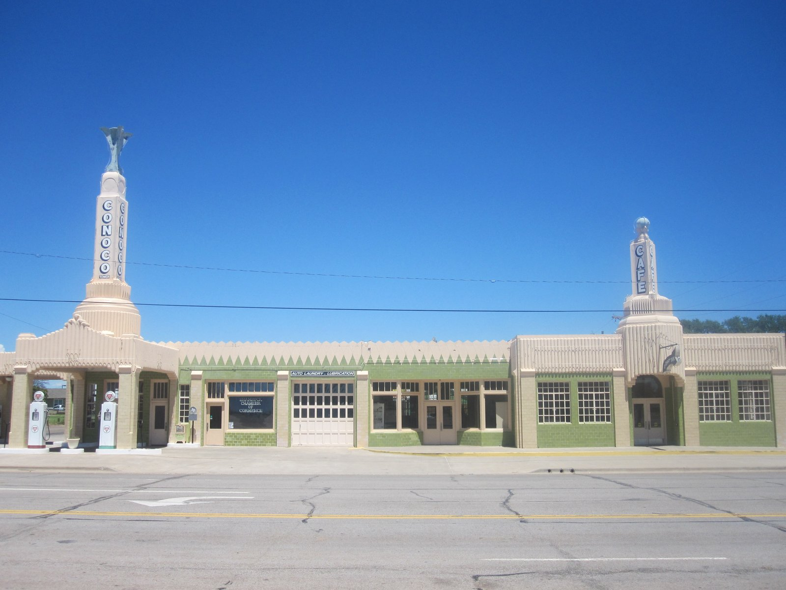
Photo: Billy Hathorn · Wikimedia Commons, CC BY-SA 3.0 Shamrock TX (Tower Station & U-Drop Inn)
Sheathed in green and gold glazed tile beneath a soaring central tower, the U-Drop Inn at Shamrock is a 1936 Art Deco filling station and cafe. It was famously rendered as a cartoon landmark on film. Stand beneath its neon spire, then carry on across the Panhandle.
-
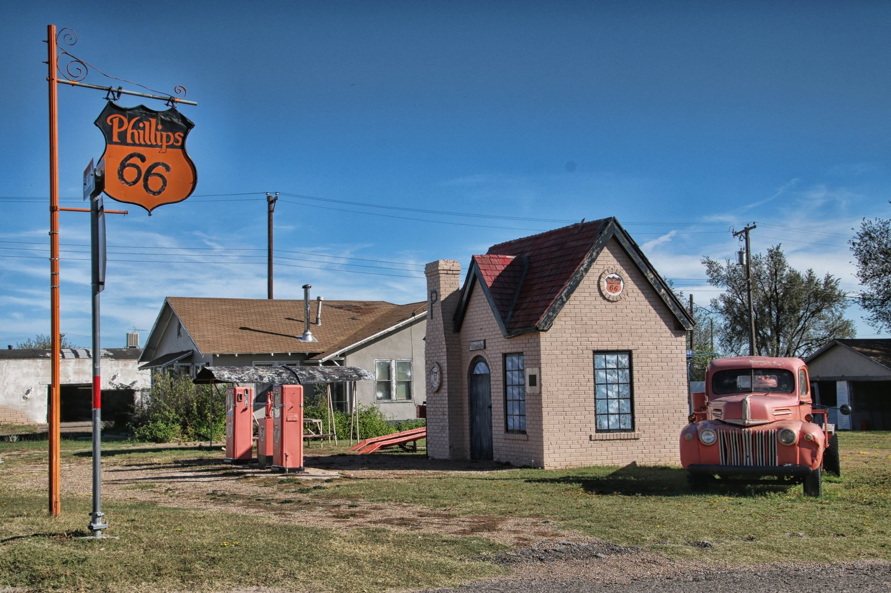
Photo: Batterup55 · Wikimedia Commons, CC BY-SA 4.0 McLean TX (Devil's Rope Museum)
McLean was the last Texas town bypassed by the interstate, and its Devil's Rope Museum is devoted entirely to barbed wire, the invention that fenced the open range. A restored Phillips 66 cottage station sits on the main drag. Inspect the tangled strands of frontier history, then continue west.
-
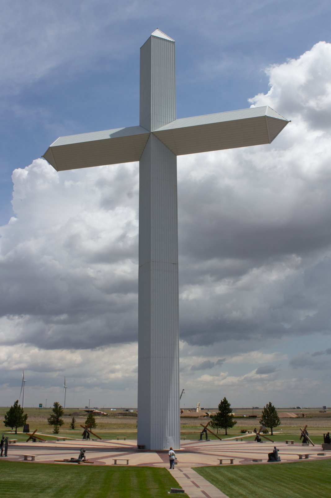
Photo: Highlightwiki · Wikimedia Commons, CC BY 4.0 Groom TX (Leaning Tower & Cross)
A deliberately tilted water tower leans hard over the plain at Groom, built to snag passing eyes, and a nineteen-story steel cross rises nearby, once the tallest in the hemisphere. The flat horizon makes both visible for miles. Take in the odd pairing, then walk on toward Amarillo.
-
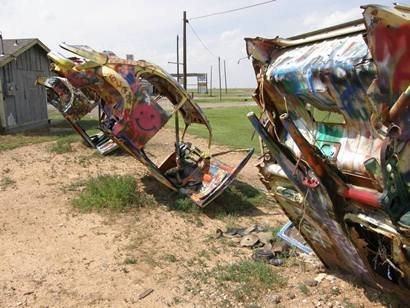
Photo: inkknife_2000 (7.5 million views +) · Wikimedia Commons, CC BY-SA 2.0 Conway TX (Bug Ranch)
Near Conway, five Volkswagen Beetles stand nose-down in the dirt at the Bug Ranch, a spray-painted spoof of the more famous Cadillacs planted farther west. Passing travelers keep adding their own scrawl to the rusting hulks. Beyond it the road runs on into Amarillo.
-
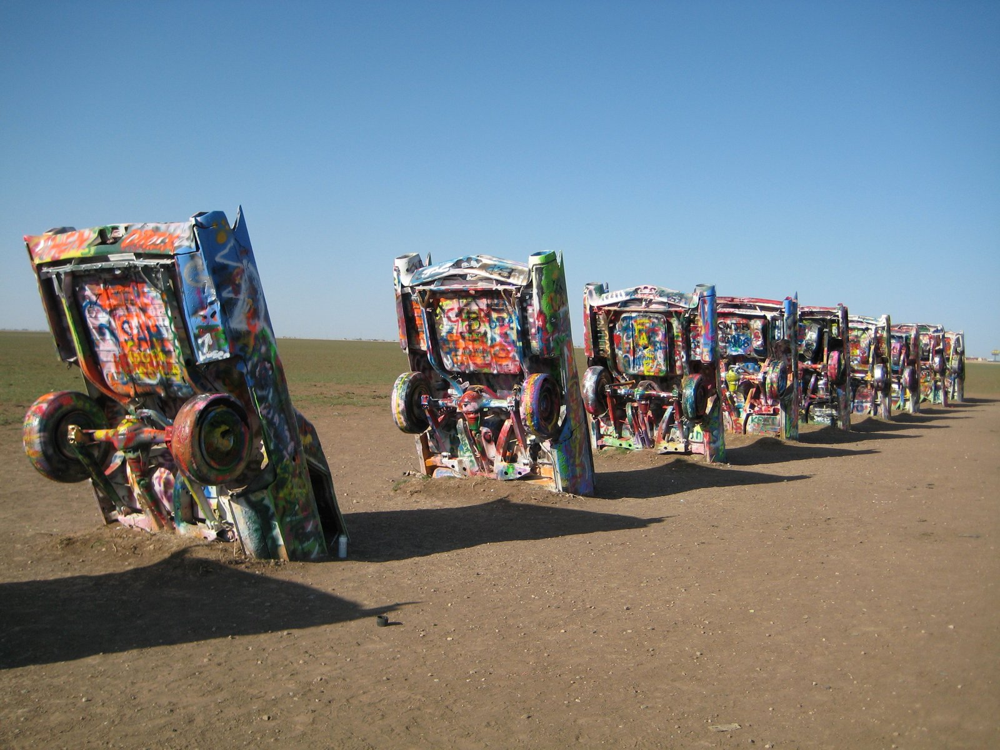
Photo: Richie Diesterheft from Chicago, IL, USA · Wikimedia Commons, CC BY 2.0 Cadillac Ranch, Amarillo, Texas
Ten Cadillacs tilt their tail fins to the sky west of Amarillo, buried nose-down in a Texas field. Planted in 1974 and repainted endlessly by passing hands, they are said to lean at the same angle as the sides of the Great Pyramid. The high plains stretch flat around them.
-
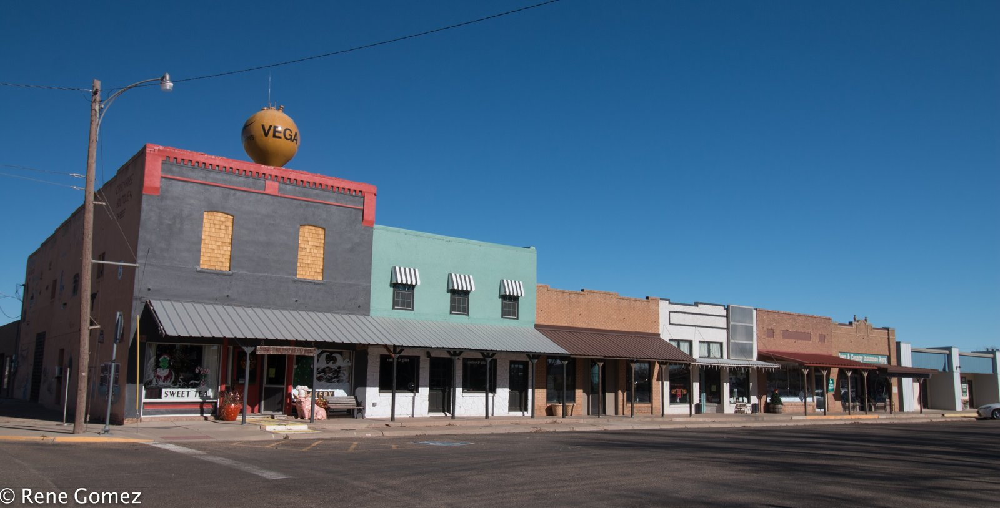
Photo: Renelibrary · Wikimedia Commons, CC BY-SA 4.0 Vega TX
Vega is a tidy Panhandle town with a restored 1924 Magnolia gas station and a vintage motor court on its quiet square. A preserved length of original 1920s concrete roadbed survives nearby. From here the route runs on toward the New Mexico line.
-
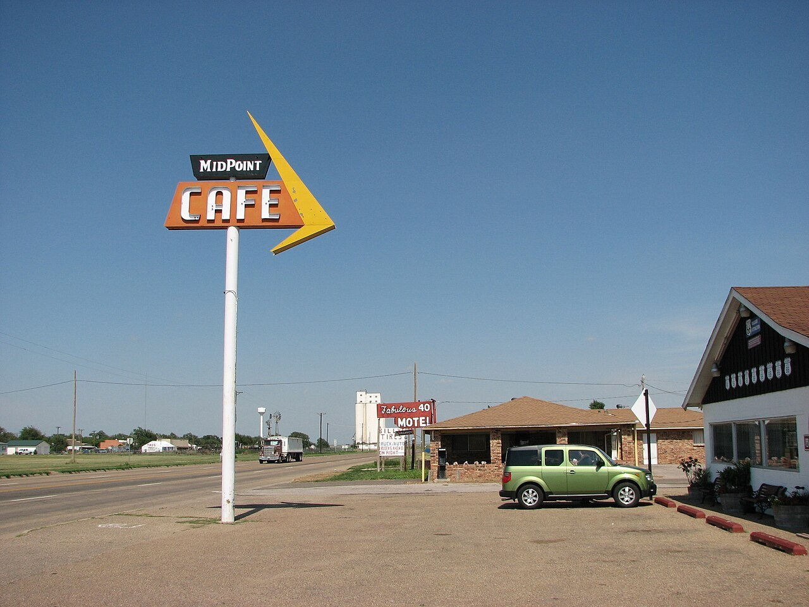
Photo: QuesterMark · Wikimedia Commons, CC BY-SA 2.0 Adrian, Texas — The Midpoint
A painted halfway line crosses the middle of Adrian's main drag: 1,139 miles to Chicago on one side, the same to Los Angeles on the other, marking the geo-mathematical midpoint of Route 66. The Midpoint Cafe has served here since 1928, and a slab of its 'ugly-crust' pie is the traditional way to mark the road's exact center. West lies the ghost town of Glenrio.
-
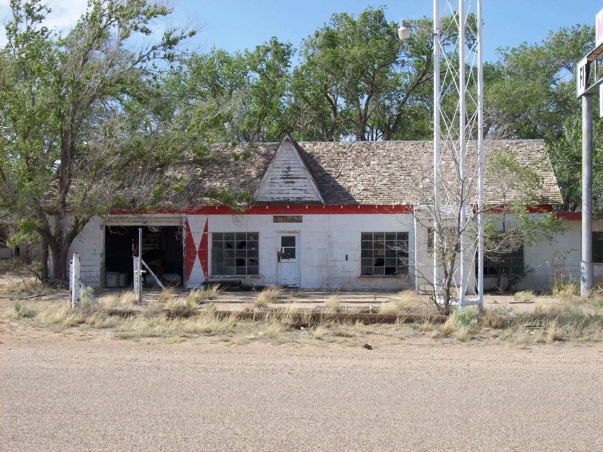
Photo: Wordbuilder · Wikimedia Commons, CC BY 3.0 Glenrio
Tumbleweeds drift across the empty main street of Glenrio, the only sound the wind worrying a loose sheet of tin on the abandoned cafe. One motel sign reads 'Last in Texas' on one face and 'First in Texas' on the other, depending on the direction of travel. The silent block, now on the National Register, sits right on the New Mexico line, where the fading ranch town of San Jon lies ahead.
-
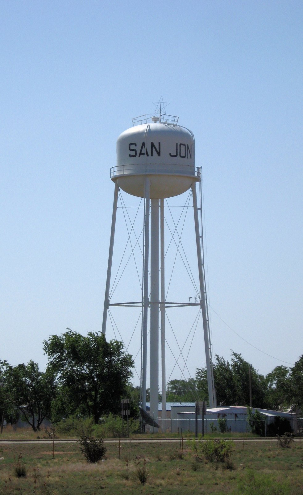
Photo: Christian M. Mericle · Wikimedia Commons, CC BY 3.0 San Jon NM
Skeletal remains of old motels and garages line the bypassed road through San Jon, a fading ranch town on the eastern New Mexico plains. The wind off the Llano Estacado never quite stops. Pause among the ruins, then continue toward Tucumcari.
-
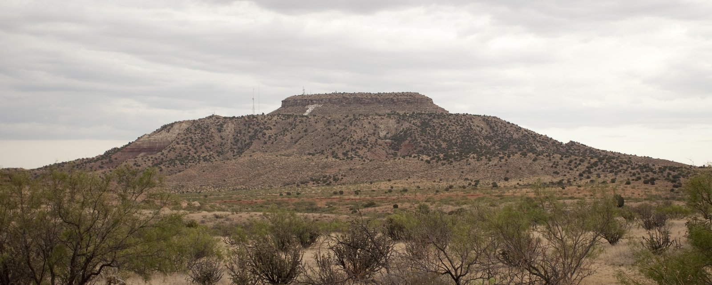
Photo: Leaflet · Wikimedia Commons, CC0 Tucumcari, New Mexico
Tucumcari calls itself the neon capital of the desert, and after dark the restored Blue Swallow Motel still buzzes its 1939 sign. 'Tucumcari Tonite!' the billboards once begged weary drivers for a thousand miles. Sleep beneath the glow, for the climb into the high country begins tomorrow.
-
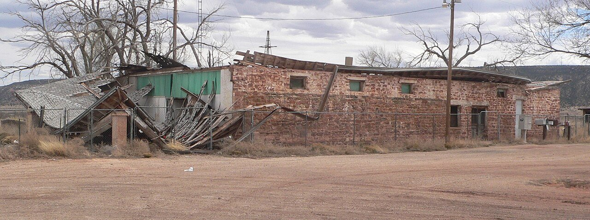
Photo: Ammodramus · Wikimedia Commons, CC0 Montoya NM
Little more than a stone ruin remains at Montoya, the old Richardson Store standing against the mesa horizon. Once a railroad shipping point for cattle, it has all but returned to the prairie. Read the weathered walls, then press on across the high desert.
-
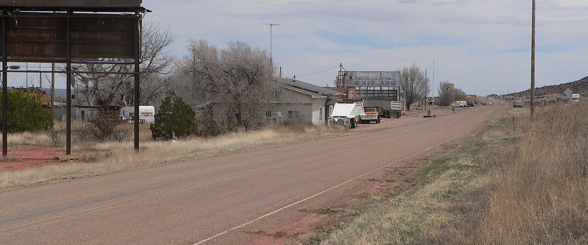
Photo: Ammodramus · Wikimedia Commons, CC0 Cuervo NM
The interstate split Cuervo in two, leaving a near-empty village with its old church and schoolhouse crumbling on the north side. Only a handful of people remain. Walk softly past the abandoned adobe, then carry on toward Santa Rosa.
-
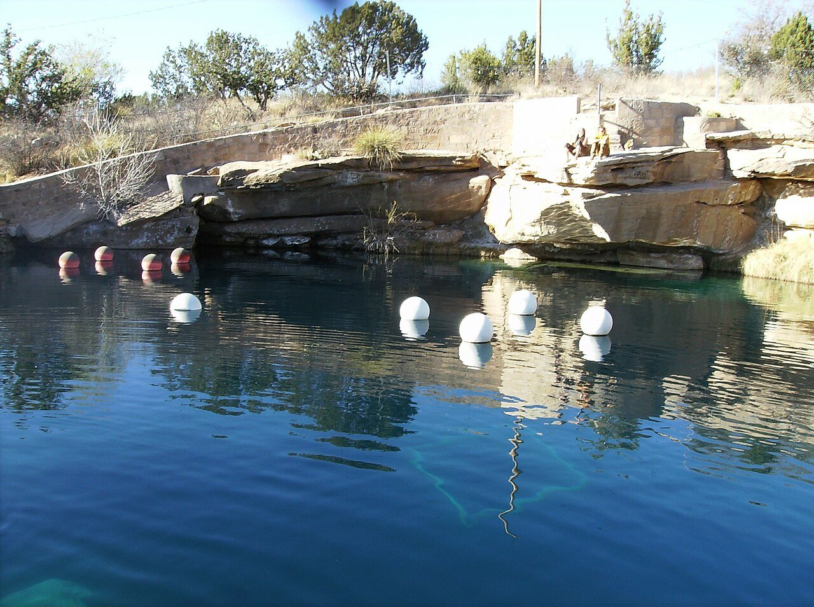
Photo: jaygannett from La Veta, CO, USA · Wikimedia Commons, CC BY-SA 2.0 Santa Rosa NM (Blue Hole)
In the heart of the desert at Santa Rosa, the Blue Hole opens as an artesian spring eighty feet deep and glass-clear, a magnet for scuba divers. The water holds a steady sixty-one degrees year round. Gaze into its impossible blue, then climb west toward the mountains.
-
Photo: Alan Levine from Strawberry, United States · Wikimedia Commons, CC BY 2.0 Cline's Corners NM
Cline's Corners stands alone at a lonely junction, a sprawling trading post that has hawked turquoise and rattlesnake curios since 1934. It survives by stubbornly straddling the busiest crossing for miles. Browse the kitsch, then push on across the high plain toward Moriarty.
-
Photo: AllenS · Wikimedia Commons, Public domain Moriarty NM
Neon blazes in Moriarty after dark, the restored Whiting Brothers and El Comedor signs among it, including a rare rotating sombrero over the old cafe. The town sits in the high Estancia Valley, ringed by distant peaks. Watch the sombrero spin against the sky, then continue toward Albuquerque.
-
Photo: G. Thomas at en.wikipedia · Wikimedia Commons, Public domain Tijeras / Sandia Crest NM
The road squeezes into Tijeras Canyon, threading between the Sandia and Manzano ranges to reach the city beyond. Above, the Sandia Crest rises over ten thousand feet, blushing watermelon pink at sunset, which is what its Spanish name means. Breathe the pine air at the pass, then descend into Albuquerque.
-
Photo: Debernardi · Wikimedia Commons, CC BY-SA 3.0 Albuquerque, New Mexico
Central Avenue runs dead straight through downtown Albuquerque, the longest stretch of Route 66 still doing so, past the restored KiMo Theatre's Pueblo Deco facade. At dusk the Sandia Mountains glow pink above the Rio Grande. Adobe and chile scent the air; carry on toward the Continental Divide.
-
Photo: Scott Catron · Wikimedia Commons, CC BY-SA 2.0 Laguna Pueblo NM
The white San Jose mission church has crowned the hilltop village of Laguna Pueblo since 1699, its interior painted with vivid Indigenous and Spanish designs. The pueblo's people have lived along this valley for centuries. Stand quietly below the white walls, then continue toward the lava country.
-
Photo: The Library of Congress from Washington, DC, United States · Wikimedia Commons, No restrictions Grants NM
Grants boomed first on carrots and then on uranium, after a Navajo shepherd found yellow ore nearby in 1950. A local mining museum descends into a mock underground shaft that recalls the boom years. Beyond the town, the road climbs toward the Continental Divide.
-
Photo: Thomas M. Rösner · Wikimedia Commons, CC BY-SA 2.0 Thoreau NM
They say Thoreau as thuh-ROO here, no matter how the New England poet spelled his name — a small trading town on the edge of the Navajo Nation. Red mesas rim the horizon, and long freight trains run close beside the old road. Wave the boxcars past, then begin the last gentle rise to the Continental Divide.
-
Photo: Thomas M. Rösner · Wikimedia Commons, CC BY-SA 2.0 Continental Divide, New Mexico
At 7,275 feet, the Continental Divide crosses the road here, the highest point on all of Route 66 and the hydrological spine of the continent. East of this line, rain drains toward the Atlantic; west of it, toward the Pacific. From the watershed, the road begins its long descent west.
-
Photo: Richie Diesterheft from Chicago, IL, USA · Wikimedia Commons, CC BY 2.0 Gallup NM (El Rancho Hotel)
Gallup opens the door to Indian Country, and its grand El Rancho Hotel once housed Hollywood stars filming Westerns in the red-rock canyons nearby. The lobby still bristles with signed photographs and a sweeping double staircase. Soak up the cowboy glamour, then carry on toward Arizona.
-
Photo: Bill Eichelberger · Wikimedia Commons, CC BY-SA 4.0 Manuelito / Arizona Line NM
Red sandstone cliffs press close to the road and the railroad at Manuelito, the last New Mexico settlement, named for a Navajo war chief. Its trading post once served sheep ranchers across the high desert. Look up at the carved cliffs, then cross into Arizona.
-
Photo: inkknife_2000 (7.5 million views +) · Wikimedia Commons, CC BY-SA 2.0 Lupton AZ (Painted Cliffs)
Arizona begins at Lupton, where painted sandstone cliffs glow orange above a cluster of trading posts at the state line. Navajo and Zuni jewelers sell their work in the shadow of the rock. The banded stone rises close beside the road as it runs on toward the Petrified Forest.
-
Photo: Joyradost · Wikimedia Commons, Public domain Petrified Forest / Painted Desert AZ
The Petrified Forest is the only national park the old route ran through, where two-hundred-million-year-old logs have turned to jeweled stone and the Painted Desert ripples in bands of red and lavender. A rusting 1932 Studebaker marks where the original road once crossed. Walk among the stone trees, then continue toward Holbrook.
-
Photo: RyderAce · Wikimedia Commons, CC BY-SA 4.0 Holbrook approach / Geronimo Trading Post AZ
The world's largest petrified tree trunk sits at the Geronimo Trading Post, hauled from the desert nearby. Cool drinks and Navajo rugs have drawn travelers in off the heat for generations. Rest in its shade a moment, then walk on into Holbrook.
-
Photo: Richie D. · Wikimedia Commons, CC BY 2.0 Holbrook, Arizona
At dusk in Holbrook, the Wigwam Motel waits: fifteen white concrete tepees with red zigzags, a vintage car nosed up to every door. Behind the cones, the painted desert smolders rose and ash along the horizon. Sleep in a wigwam tonight, then chase the road west toward the crouching black rabbit of the Jackrabbit Trading Post.
-
Photo: John Phelan · Wikimedia Commons, CC BY-SA 3.0 Joseph City AZ (Jackrabbit Trading Post)
The yellow sign at the Jackrabbit Trading Post near Joseph City reads simply here it is, beneath a crouching black jackrabbit — the climax of billboards stretching back hundreds of miles. Children still climb the giant fiberglass rabbit out front. Snap the famous sign, then carry on toward Winslow.
-
Photo: Indy2 · Wikimedia Commons, Public domain Winslow AZ (Standin' on the Corner)
On a famous corner in Winslow, a bronze figure and a flatbed Ford immortalize the song that begged the world to take it easy. A mural of a girl in a window completes the scene the lyrics describe. Stand on the corner a while, then walk on toward the volcanic uplands.
-
Photo: National Map Seamless Server · Wikimedia Commons, Public domain Meteor Crater AZ
Meteor Crater is a near-perfect bowl nearly a mile wide and five hundred and fifty feet deep, blasted into the plain by an iron meteorite some fifty thousand years ago. Apollo astronauts trained on its rim for the moon. Peer over the staggering pit, then climb toward Flagstaff's pines.
-
Photo: William Wadas · Wikimedia Commons, CC BY-SA 4.0 Walnut Canyon AZ
The first ponderosa pines rise as the road reaches Walnut Canyon, where the Sinagua built stone dwellings into the limestone ledges of a deep wooded gorge eight hundred years ago. A cliff trail loops past their cool, dark rooms. Peer into their canyon homes, then follow the road up into Flagstaff.
-
Photo: SearchNet Media from Tucson, Arizona, USA · Wikimedia Commons, CC BY 2.0 Flagstaff, Arizona
Flagstaff sits at 6,900 feet under the snow-capped San Francisco Peaks, ponderosa pines crowding the road. Trains still rumble through on the line Route 66 shadowed across the West, and the Lowell Observatory where Pluto was found stands on the hill. From here the road tips down toward the great desert and the Colorado River.
-
Photo: Unknown · Wikimedia Commons, Public domain Williams AZ
Not until 1984 did the interstate finally bypass Williams, the last town on the whole route to hold out. Its neon-lit main street and the depot of the Grand Canyon Railway keep the old spirit alive. Wander beneath the glowing signs, then continue toward Ash Fork.
-
Photo: G. Edward Johnson · Wikimedia Commons, CC BY 4.0 Ash Fork AZ
Ash Fork holds the title 'flagstone capital of the world,' its layered sandstone quarried nearby to pave patios across the country. The town clings to the edge of the high plateau where it begins its long drop toward the desert. From here the road descends toward Seligman.
-
Photo: Vidor at en.wikipedia · Wikimedia Commons, Public domain Seligman, Arizona
Barber Angel Delgadillo led the campaign that saved Route 66 from Seligman, helping win the road's Historic designation in Arizona in 1987 after the interstate bypassed the town. His Snow Cap Drive-In still plays gentle jokes on every traveler. Seligman is remembered as the birthplace of the Historic Route 66 revival.
-
Photo: G. Edward Johnson · Wikimedia Commons, CC BY 4.0 Grand Canyon Caverns AZ
The Grand Canyon Caverns are billed as the largest dry cavern in the United States, reached by an elevator that drops twenty-one stories into chambers once stocked as a Cold War fallout shelter. The still air below has not seen rain in millions of years. Above ground, the old road runs on west.
-
Photo: Marine 69-71 · Wikimedia Commons, CC BY-SA 4.0 Truxton / Hackberry AZ
Past Truxton, the Hackberry General Store overflows — a former mining post crammed with rusted gas pumps, vintage cars, and faded route signs. A red Corvette sits forever parked out front. Browse the glorious junk, then walk on toward Kingman.
-
Photo: Ken Lund from Reno, Nevada, USA · Wikimedia Commons, CC BY-SA 2.0 Kingman AZ
Kingman is the heart of the Arizona route, with a fine museum in the old powerhouse and Andy Devine Avenue running dead through its centre — Route 66 itself, named for the actor who grew up in this town. The town sits in a high desert basin ringed by jagged peaks. Cool down here, then steel yourself for the climb to Oatman.
-
Photo: The Greater Southwestern Exploration Company · Wikimedia Commons, CC BY 2.0 Cool Springs Station AZ
Early Model T drivers sometimes reversed up this hill for traction, on what was long called the most feared grade of the whole route, climbing into the Black Mountains. Partway up, the restored Cool Springs station clings to the rock, its stone pillars rebuilt after decades in ruins. Ahead lie the switchbacks to Sitgreaves Pass.
-
Photo: IrishFireside from Ishpeming, MI, USA · Wikimedia Commons, CC BY 2.0 Sitgreaves Pass & Oatman, Arizona
Hairpin bends twist over Sitgreaves Pass at 3,586 feet before dropping into the gold-mining ghost town of Oatman. Wild burros, descendants of miners' pack animals, amble the dusty main street begging for carrots. Clark Gable is said to have honeymooned at the hotel here, before the road drops on toward the desert floor.
-
Photo: Ken Lund from Reno, Nevada, USA · Wikimedia Commons, CC BY-SA 2.0 Needles CA
Needles is one of the hottest towns in the country, the California border settlement named for the jagged peaks across the river. The El Garces depot, a former Harvey House hotel, gleams white near the tracks. Drink deep in the shade, then brace for the long crossing of the Mojave.
-
Photo: Einbierbitte · Wikimedia Commons, CC BY-SA 3.0 Goffs CA
A restored 1914 schoolhouse stands alone against the creosote plain at Goffs, a near-vanished desert hamlet. The original road looped through here before being straightened. Walk the lonely schoolyard, then push deeper into the Mojave.
-
Photo: Tony Hoffarth · Wikimedia Commons, CC BY-SA 2.0 Essex / Fenner CA
Essex and Fenner are desert ghosts now, their shuttered gas stations and a lonely roadside well marking a place that once promised the only water for forty parched miles. The Mojave stretches flat and shimmering in every direction. Pause at the dry pumps, then continue west.
-
Photo: Wilson44691 · Wikimedia Commons, Public domain Amboy CA (Roy's & Amboy Crater)
The boomerang sign of Roy's Motel and Cafe rises from the empty desert at Amboy like a neon mirage, and to the southwest the black cone of Amboy Crater, an extinct volcano, broods over the plain. The town all but died when the interstate stole its traffic. Stand beneath the famous sign, then carry on across the lava flats.
-
Bagdad / Siberia CA
Bagdad once held the record for the longest dry spell in the country, over two years without rain, and it lent its name to a famous cafe. Nothing remains of the parched town now but a scatter of foundations and a lone tree. Feel the immensity of the silence, then walk on toward Barstow.
-
Photo: © Pierre André · Wikimedia Commons, CC BY-SA 4.0 Newberry Springs CA (Bagdad Cafe)
At Newberry Springs stands the real Bagdad Cafe, a humble diner made famous by the film of the same name, still serving travelers under its water tower in the open desert. Pilgrims from around the world sign its walls. Have a coffee where the movie was shot, then continue the last stretch into Barstow.
-
Daggett CA
Twenty-mule teams once hauled borax and silver through Daggett, and the Joad family paused here in a famous novel of the Dust Bowl migration. A weathered stone garage still leans by the road. Picture the mule teams plodding by, then walk into Barstow.
-
Photo: Amin Eshaiker · Wikimedia Commons, CC BY-SA 3.0 Barstow, California
Heat shimmers off the hardpan at Barstow, the Mojave crossing that Dust Bowl families feared most. At its heart stands the Casa del Desierto, a 1911 Harvey House whose arched courtyards once sheltered railroad travelers fed by white-gloved waiters. West of town, the long grind up Cajon Pass climbs toward San Bernardino.
-
Photo: inkknife_2000 (7.5 million views +) · Wikimedia Commons, CC BY-SA 2.0 Cajon Pass / Summit Inn CA
Cajon Pass threads a notch between the San Bernardino and San Gabriel mountains, crossing directly over the line of the San Andreas Fault. Long freight trains grind up the grade toward a summit above four thousand feet. Past the crest, the road leaves the Mojave behind and begins the long descent toward the coast.
-
Photo: House10902 ( talk ). · Wikimedia Commons, CC BY-SA 3.0 San Bernardino, California
The first McDonald's opened in San Bernardino in 1940, back when orange groves still perfumed the valley below Cajon Pass. In nearby Rialto, the Wigwam Motel's cluster of concrete tipis stands beside the road. The Pacific is near now, and the route turns toward the sea through the sprawl of greater Los Angeles.
-
Photo: Jordan W. · Wikimedia Commons, CC BY-SA 3.0 Rancho Cucamonga CA
Rancho Cucamonga became a national punchline after radio comedians turned its name into a running joke. The restored Magic Lamp Inn and remnants of old vineyards recall the days when this valley brimmed with grapes and wine. The road runs on west beneath the mountains.
-
Photo: Jordan W. · Wikimedia Commons, CC BY-SA 3.0 Foothill Boulevard / Upland–Claremont CA
Palm-lined medians and mid-century motel signs trace the road's golden age along Foothill Boulevard, the linked towns west of Cucamonga running beneath the San Gabriel Mountains. In winter the peaks loom snow-capped to the north. The old strip carries the route on toward Pasadena.
-
Photo: Los Angeles · Wikimedia Commons, CC BY-SA 3.0 Azusa / Duarte CA
At the mouth of the San Gabriel Canyon, Azusa and Duarte sit beneath the looming front range. The Aztec Hotel in nearby Monrovia, a wild 1925 Mayan-Revival fantasy, stands just off the route. Crane up at the mountains, then continue toward Pasadena.
-
Photo: Mike Peel (www.mikepeel.net) · Wikimedia Commons, CC BY-SA 4.0 Pasadena & Los Angeles, California
Los Angeles is the final city, reached through Pasadena, where Route 66 ran down Colorado Boulevard and, later, Santa Monica Boulevard toward the ocean. Palm trees line the avenues, and the desert lies at last to the east. Only a few miles of salt air remain before the end of the road.
-
Photo: Los Angeles · Wikimedia Commons, CC BY-SA 3.0 Arroyo Seco Parkway / Highland Park CA
Here the road becomes the country's first freeway, the Arroyo Seco, opened in 1940 to sweep cars from Pasadena into Los Angeles along a wooded canyon. Graceful old bridges arch over the dry streambed below. Feel the history of that very first parkway, then roll on into the heart of the city.
-
Photo: Visitor7 · Wikimedia Commons, CC BY-SA 3.0 Downtown LA / Olvera Street CA
Olvera Street in downtown Los Angeles is the city's oldest block, a brick-paved Mexican marketplace marking the birthplace of the pueblo in 1781. Mariachi music and the smell of fresh churros fill the air. Soak up the old plaza, then make for the sea on the final miles to Santa Monica.
-
Photo: John Salatas · Wikimedia Commons, CC BY-SA 4.0 Santa Monica Pier, California
The 'End of the Trail' sign stands at the far end of Santa Monica Pier, the Pacific breaking beneath the boards after 2,448 miles of America. From a curb in downtown Chicago to this railing, Route 66 crosses eight states and three time zones, tracing the whole arc of the country from the Great Lakes to the sea. This is where the Mother Road ends.
Walking Route 66
Your watch is already counting these steps. Watch Walks spends them on Route 66, all 3,940 km of it, and hands you each landmark as you reach it. There's no route recording, no account and no ads. The Inca Trail is free; this one is a one-time purchase with no subscription.
Other trails in North America
- Appalachian Trail 3,536 km · USA
- Pacific Crest Trail 4,265 km · USA
- John Muir Trail 340 km · USA (California)
- Wonderland Trail 150 km · USA (Washington)
- The Long Trail 439 km · USA (Vermont)
- Tahoe Rim Trail 265 km · USA (California/Nevada)